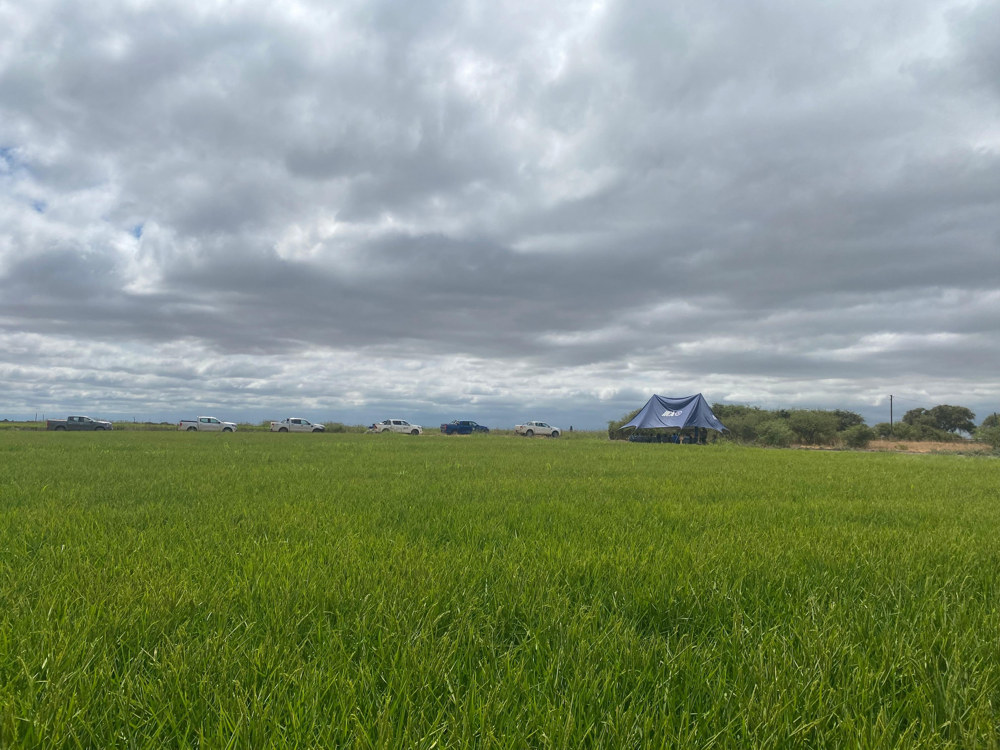
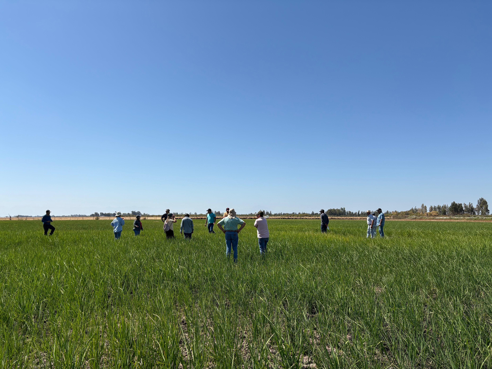
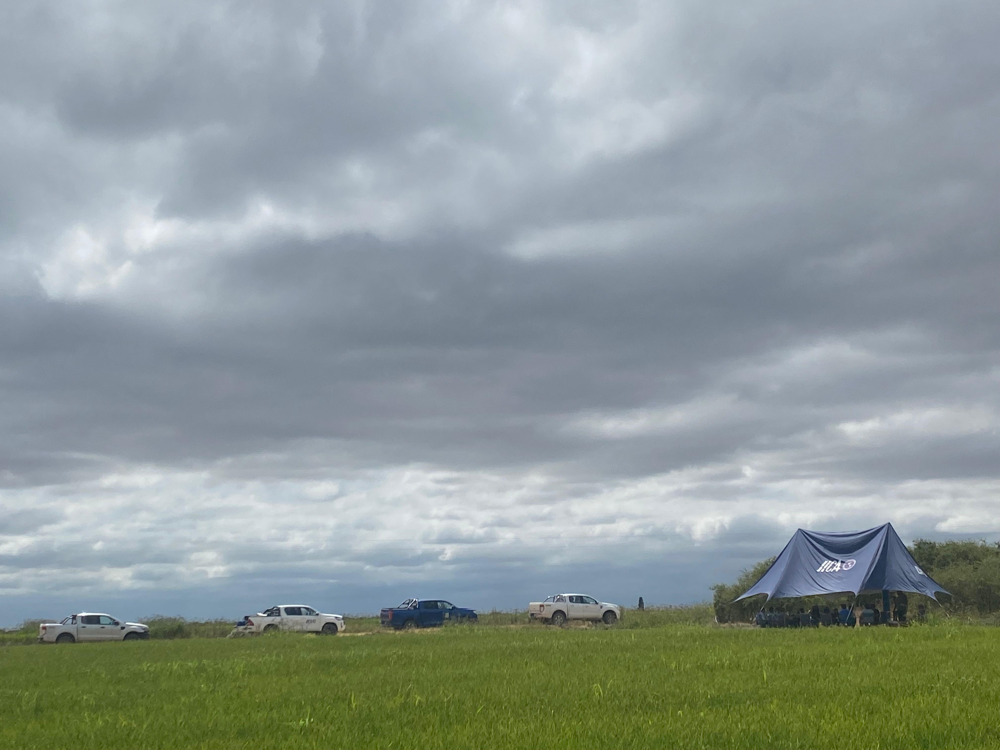

Últimas Noticias

Solicitar agenda
Talleres Participativos y Entrevistas
Agosto 2025Inicio de la fase de consulta regional con actores clave para el diseño de la plataforma.
Solicitar agenda

Leer nota oficial
IICA Chile impulsa mercados de carbono
04 Febrero 2026Constitución de comités directivo y técnico para integrar a productores de arroz en mercados de carbono.
Leer nota oficial

Leer comunicado
Plataforma Regional de Carbono
04 Septiembre 2025Lanzamiento del proyecto para integrar a productores en mercados de bonos con MRV digital.
Leer comunicado

Alianza Financiera BDA - IICA
Agosto 2025Nuevo convenio en Panamá para fortalecer la solidez financiera tecnológica de los productores.
Ver acuerdo

Éxito del Sistema SICA en Chile
Julio 2025La metodología de intensificación logra reducir drásticamente el uso de agua en regiones templadas.
Leer reporte